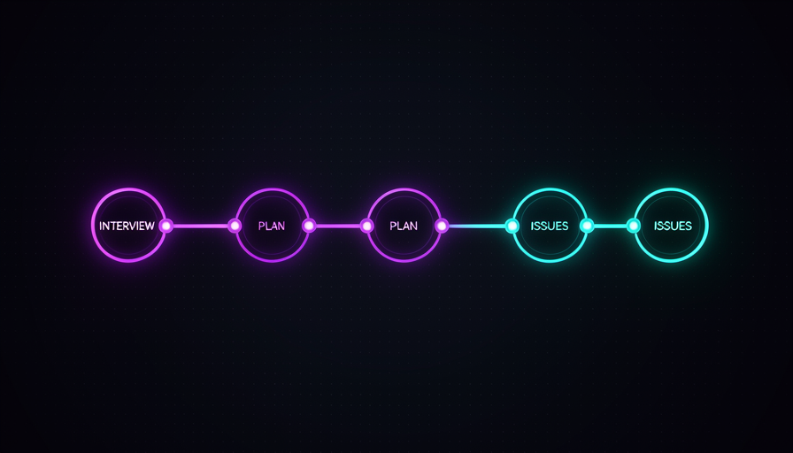
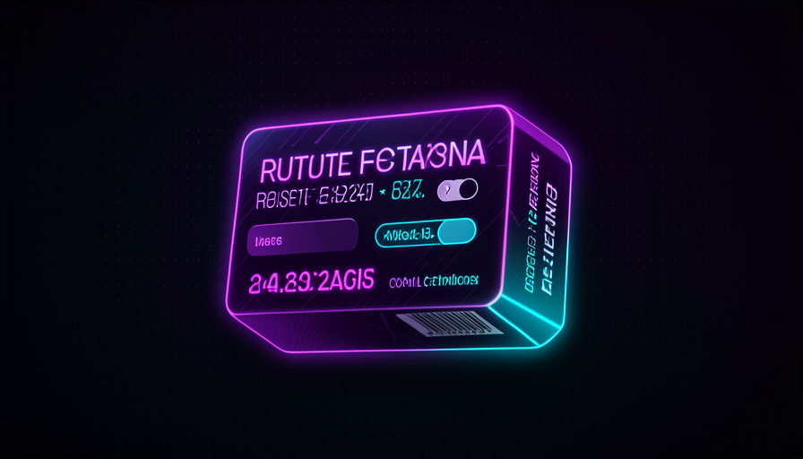
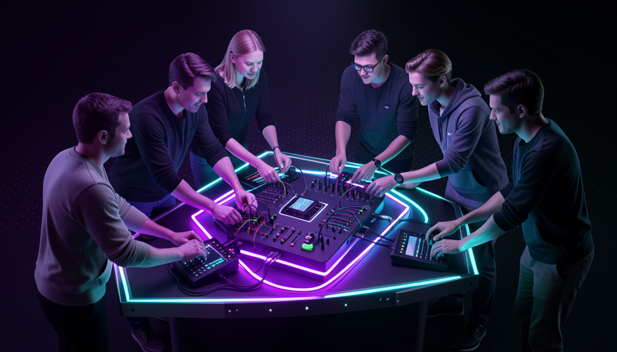

📖 Glossário vivo (leia antes — volte sempre que precisar)
Você já sabe o que é skill, procedure e grill-me (Trilha 3). Aqui ficam só os termos novos deste módulo — fixe estes antes de seguir:
🔗 grill-me → PRD → issues
🧠 Imagine assim: uma fábrica de móveis. A madeira bruta entra; passa pela serra, depois pela lixadeira, depois pelo verniz. Cada estação faz uma coisa bem feita e passa adiante. Ninguém tenta serrar, lixar e envernizar no mesmo movimento. O seu pensamento também vira uma linha de montagem: ideia crua → entrevista → documento → tarefas.
No módulo 3.5 você viu a grill-me — a skill que entrevista você até chegar a um shared understanding (entendimento compartilhado). Ela é poderosa sozinha, mas o Matt Pocock não para nela: ele a usa como primeira estação de uma linha. Nas palavras dele, ele encadeia três skills em sequência: grill-me → two-PRD → to-issues. É o que ele chama, na prática, de "pipeline de pensamento".
A lógica de cada estação: a grill-me tira a bagunça da sua cabeça e alinha a visão; a two-PRD pega esse alinhamento e escreve um PRD (o documento de requisitos do produto); e a to-issues quebra o PRD num backlog de issues prontas pra implementar. Você sai de uma ideia vaga na cabeça e chega a tarefas concretas no backlog — sem nunca escrever uma linha de código no caminho. O porquê: cada passo é pequeno e verificável, então é fácil corrigir antes que o erro se propague. O erro comum é pular direto da ideia pro código (pedir "implementa isso" no escuro) e descobrir, três horas depois, que a IA construiu a coisa errada.
O pipeline do Matt: três skills encadeadas viram uma linha de montagem do pensamento.

Em 1 frase: encadear skills é montar uma linha de produção que leva sua ideia crua até um backlog de tarefas prontas.
Indo mais fundo (opcional): por que "two-PRD"?
O nome sugere uma skill que produz o PRD em duas passadas — primeiro um rascunho amplo, depois uma versão refinada — em vez de tentar acertar tudo de uma vez. É o mesmo princípio do pipeline aplicado dentro de uma estação: passos pequenos e verificáveis quase sempre batem uma tacada gigante. O importante não é o nome exato da skill, e sim a ideia: cada estação faz um trabalho focado e entrega algo melhor do que recebeu.
⛓️ Procedures em sequência
🧠 Imagine assim: uma receita de bolo com etapas numeradas. Você não joga ovo, farinha e fermento de qualquer jeito e torce — você bate as claras primeiro, depois mistura, depois assa. A ordem é a receita. Encadear procedures é exatamente isso: passos numerados que você dispara, um de cada vez.
Lembre da distinção da Trilha 3: existem procedures (você invoca) e abilities (o modelo invoca sozinho). O pipeline do Matt é feito de procedures: ele decide, em cada passo, qual skill rodar. Por isso "encadear" aqui não é mágica automática — é você chamando a grill-me, lendo o resultado, então chamando a two-PRD, lendo de novo, e só então a to-issues. Cada elo da corrente é uma decisão consciente sua.
Por que procedures e não uma "mega-skill" que faz tudo? Porque cada estação tem um ponto de checagem. Depois da grill-me você confere se o alinhamento bate com sua visão; depois do PRD você confere se os requisitos estão certos; só então deixa quebrar em issues. Se algo saiu torto, você corrige ali, barato, antes de propagar pro resto. O erro comum é querer que a IA faça ideia → código num único comando: aí não há onde parar e corrigir, e quando o erro aparece já contaminou tudo. Sequência com checkpoints é mais lenta por passo, mas muito mais rápida no total — porque você quase nunca refaz.
Recuperação rápida: por que o Matt usa procedures encadeadas em vez de uma única "mega-skill" que faz tudo?
Em 1 frase: são procedures (você invoca), uma de cada vez, com um ponto de checagem entre cada elo da corrente.
🎮 Você no volante
🧠 Imagine assim: um carro com piloto automático. Você pode soltar o volante e deixar ele te levar — mas o Matt prefere manter as mãos no volante. O carro ajuda com a parte chata (manter a faixa), mas ele escolhe o destino e cada curva. O pensamento é dele; a IA é só a direção assistida.
Aqui aparece a filosofia central do Matt, que veio na Trilha 3 e fecha agora: ele prefere procedures justamente porque quer estar no volante. Nas palavras dele: "I know my skills, I don't want to delegate my thinking" ("eu conheço minhas skills, não quero delegar o meu pensamento"). Ele esconde a maioria das descrições de skill do modelo (disable model invocation) e mantém o conhecimento no humano. O pipeline grill-me → PRD → issues é a forma concreta disso: a IA executa cada estação, mas quem dirige a corrente é você.
Há aqui um contraste de escolas que vale conhecer. Outras pessoas (ex.: a abordagem Superpowers, da Obra) preferem o oposto: deixar o modelo no controle, invocando skills sozinho. O Matt prefere o humano no controle. Não é que uma esteja certa e a outra errada — é uma decisão de quanto você quer delegar o pensamento. O porquê da escolha do Matt: o pensamento de produto e arquitetura é a parte que de verdade escala com você, então ele não terceiriza essa parte. O erro comum é confundir "deixar a IA fazer o trabalho braçal" com "deixar a IA tomar as decisões" — encadear procedures te dá o primeiro sem entregar o segundo.
🔬 Exemplo resolvido: o mesmo recurso, com e sem o volante
Tarefa: adicionar "exportar relatório em PDF" ao app. Mesmas skills disponíveis, duas posturas:
Sem o volante
"IA, adiciona export de PDF — você decide tudo." → Ela escolhe uma biblioteca pesada, inventa um layout e quebra a tela de relatório existente. Você descobre só no fim e refaz.
Com o volante (pipeline)
grill-me te pergunta: "uma página ou várias? reusar o layout atual?" → você alinha. two-PRD escreve os requisitos. to-issues gera 3 issues pequenas. Você revisa cada passo — e a IA implementa o que você decidiu.
Em 1 frase: a IA faz o braçal de cada estação; o pensamento — e o volante — continuam sendo seus.
♻️ Repetiu 3x? Vira skill
🧠 Imagine assim: você anota a mesma receita de café num papelzinho toda manhã. Na terceira vez, para e pensa: "por que não colo isso na parede de uma vez?". Daí em diante, ninguém na casa precisa lembrar — está escrito. Skill é o papel na parede do seu fluxo de trabalho.
Em programação existe um princípio famoso: DRY ("Don't Repeat Yourself", não se repita). A ideia clássica: se você copia e cola o mesmo trecho de código, transforme em uma função única. O Matt aplica isso ao humano: se você fez o mesmo plano, o mesmo fluxo de pensamento, várias vezes na mão — pare e transforme em skill. A frase dele é direta: "I've made this plan 100 times → turn it into a skill" ("fiz esse plano 100 vezes → transforme numa skill").
A regra prática que funciona: repetiu umas três vezes, vira skill. Uma vez pode ser sorte; duas pode ser coincidência; na terceira já é um padrão — e padrão pede automação. Lembre da Trilha 2: dá pra empacotar knowledge + skill (o que você sabe e o que você já fez muitas vezes) num procedimento reutilizável. O que não dá pra empacotar é a sabedoria (saber QUANDO usar) — por isso o gatilho "repetiu 3x" é seu, não da IA. O erro comum são dois extremos: ou nunca empacotar (e refazer o mesmo plano pra sempre), ou empacotar tudo cedo demais (e encher o contexto de skills que você usou uma vez só). A terceira repetição é o ponto de equilíbrio.

Em 1 frase: DRY humano = na terceira vez que você repetir um plano na mão, transforme-o em skill.
Indo mais fundo (opcional): por que "3 vezes" e não "1 vez"?
Empacotar cedo demais cobra um preço que você já conhece da Trilha 3: toda skill vaza a sua description na janela de contexto. Uma skill que você usou uma vez só é puro custo, sem retorno. Esperar a terceira repetição garante que o padrão é real e recorrente — aí o investimento de escrever a skill se paga muitas vezes. É o equilíbrio entre não se repetir (DRY) e não inchar o contexto (higiene de contexto).
🌊 Distribuir pro time
🧠 Imagine assim: um restaurante onde só o chef sabe fazer o molho secreto. Quando ele falta, o prato sai ruim. Agora escreva a receita e cole na cozinha: todo cozinheiro acerta o molho, sempre. O pior prato da casa subiu de nível. Skill compartilhada é a receita na parede da cozinha do time.
Aqui a coisa fica grande. Depois de virar skill, o Matt distribui pro time: "distribute to the team, everyone plans the same way" ("distribua pro time, todo mundo planeja do mesmo jeito"). De repente o seu melhor fluxo de planejamento não mora só na sua cabeça — vira o padrão de todos. O júnior que planejava mal agora planeja com a mesma skill que o sênior. Isso é o que ele chama de "raising the floor" (elevar o piso): o pior caso do time sobe.
Repare na diferença entre elevar o teto e elevar o piso. Treinar uma estrela individual eleva o teto — o melhor fica melhor. Distribuir uma skill eleva o piso — o pior resultado possível do time melhora, porque ninguém mais parte do zero. E elevar o piso costuma render mais: um time onde o pior planejamento já é "bom" produz com qualidade muito mais consistente. Isso conecta com a Trilha 2 ("suas skills são o teto"): quando você empacota e distribui, você levanta o teto de cada pessoa de uma vez. O erro comum é tratar suas skills como segredo competitivo dentro do time — guardá-las só pra você não te faz mais valioso, faz o time inteiro mais lento.

Em 1 frase: distribuir a skill eleva o piso — o pior planejamento do time vira, no mínimo, o seu melhor.
🔁 Contribuir de volta
🧠 Imagine assim: a receita na parede da cozinha não é sagrada. Quando um cozinheiro descobre que uma pitada de limão melhora o molho, ele edita a receita na parede. No dia seguinte, todos já fazem o molho melhor. A skill compartilhada é viva: melhora com o uso de todos.
O último elo fecha o ciclo: contribuir de volta. A frase completa do Matt é: "distribute to the team, everyone plans the same way, contributing back to that skill, raising the floor". Ou seja: o time não só usa a skill — quando alguém percebe uma melhoria, devolve pra skill compartilhada. É o modelo do open-source aplicado ao seu fluxo interno: muitos olhos, muitas melhorias, um artefato cada vez melhor.
É por isso que "elevar o piso" não é um evento único, mas um ciclo: cada contribuição sobe o piso de novo, e o novo piso vira o ponto de partida de todos. Repare como tudo da Trilha 3 conecta: anatomia da skill (3.1) te deu a peça; o custo de contexto (3.2) te ensinou a escondê-la quando preciso; a teach skill (3.3) e o ensino que retém (3.4) mostraram skills que aprendem; a grill-me (3.5) te deu a primeira estação; e agora você encadeia, empacota, distribui e melhora em time. O erro comum é tratar a skill como "pronta" depois de escrita — skills boas são vivas. A seguir, copie o pipeline completo e use hoje:
# PIPELINE: da ideia crua ao backlog (rode UMA estação por vez, conferindo entre elas) # 1) grill-me — alinhe a visão antes de qualquer código /grill-me > Interview me relentlessly about every aspect of this plan until we reach a > shared understanding. Ask one question at a time and give your recommended > answer. If a question can be answered by exploring the codebase, do that instead. # -> CONFIRA: o entendimento bate com a minha visão? (se não, ajuste aqui) # 2) two-PRD — transforme o alinhamento num PRD /two-prd > Com base no que alinhamos, escreva um PRD: objetivo, requisitos, escopo, > o que está FORA do escopo, e critérios de aceite. # -> CONFIRA: os requisitos estão certos? falta algo? (corrija o PRD aqui) # 3) to-issues — quebre o PRD em tarefas pequenas /to-issues > Quebre este PRD em issues pequenas e independentes. Cada issue: título, > descrição e critério de aceite. Sem implementar nada ainda. # -> CONFIRA: cada issue é pequena e clara? entregue no backlog. # DRY humano: fez este pipeline 3x? -> vire skill -> distribua pro time -> # todos contribuem de volta -> o piso do time sobe.
Recuperação rápida: o que significa "contribuir de volta" para uma skill compartilhada?
Em 1 frase: a skill é viva — quem usa melhora e devolve, e o piso do time sobe a cada contribuição.
🧾 Resumo do Módulo
Próxima trilha:
Trilha 4 — Técnicas Avançadas: AFK, sandboxes, GitHub Actions, filas e sistemas auto-melhoráveis. Você sai do loop e coloca agentes pra trabalhar enquanto você dorme.